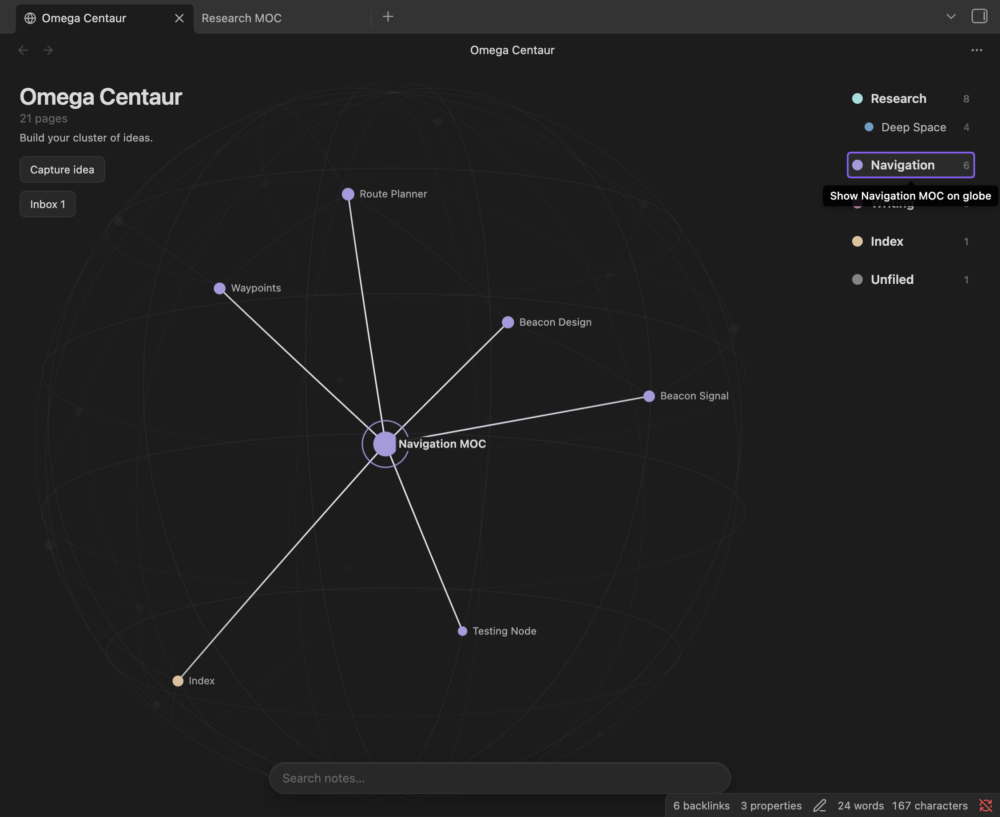
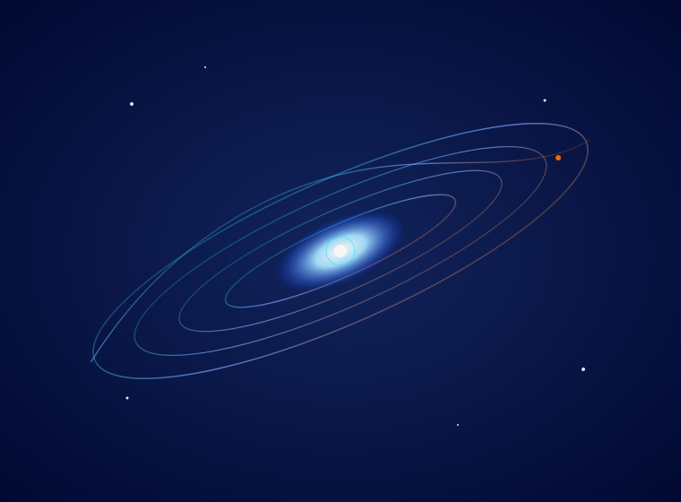

Evolving intelligence. Enduring agency.
Evolving intelligence. Enduring agency.04 / MORPHY LABS
Ideas grow stronger when put to use.
Labs is where Morphy shares plug-ins and experiments that make ideas tangible. The featured plug-in is Omega Centauri.
Centauri. A spatial way to explore notes and links inside an Obsidian vault. View in Obsidian Community
01 — The Library
Tools and Development

OBSIDIAN PLUG-IN / KNOWLEDGE MAPPING
Omega Centauri
Turn a vault into a rotating map: notes sit on a sphere, links follow arcs, and search points you toward what you need. Move notes, explore groups, and give new ideas a place through the Inbox.
Built for Obsidian desktop. Installation and compatibility details are in the repository.

JOURNAL APP / IN DEVELOPMENT
Andromeda
Andromeda is a journal app in development. This space will carry its purpose, preview, and release information as the product takes shape.
In developmentExplore more development work on GitHub ↗
02 — What belongs here
Small tools, serious standards.
Labs is an experimental space within the Morphy brand, grounded in the same evidence and accountability.
One decision or task.
A plug-in should solve a defined problem rather than add another layer of complexity.
Visible reasoning.
Users should be able to see the assumptions, sources, and limits behind its output.
Human control.
A tool should help people judge and act; it should not hide the judgement it asks them to make.